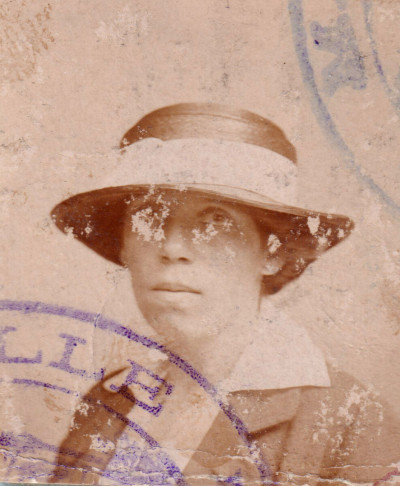

Marguerite Julie DELEMER — Née le 13/03/1876 à Chauny — Décédée le 28/10/1953 à Melle les Gand
Marguerite Julie DELEMER
Née le 13/03/1876 à Chauny
Décédée le 28/10/1953 à Melle les Gand
Résumé
Marguerite Julie Delemer naît le 13 mars 1876 à Chauny, dans l'Aisne, ville où son grand-père Aimé Ternynck avait établi une sucrerie en 1854 — témoignage des activités diversifiées de la famille entre le textile roubaisien et l'industrie sucrière picarde. Fille d'Adolphe Auguste Henri Marie Delemer et de Lucie Juliette Ternynck, elle perd son père à l'âge de sept ans en 1883, puis sa mère en 1900, à seulement 24 ans. Son enfance, qu'elle passe avec sa mère et ses grands-mères au château de Rouge près de Chauny, est celle d'une jeune fille qui ne va jamais en classe mais lit énormément — elle en sort remarquablement cultivée, selon le souvenir de ses proches. Elle s'engage dans la vie philanthropique de Lille, participant à la fondation de l'Institut Pasteur de Lille, et entretient des liens d'amitié personnels avec les docteurs Albert Calmette et Camille Guérin, qui y mettront au point le BCG, vaccin contre la tuberculose.
Elle épouse André Georges Saint-Léger, né à Tournai en 1870, administrateur-délégué des Établissements Agache. Pendant la Première Guerre mondiale, depuis Lille occupée, elle aide les jeunes à s'évader, fait passer clandestinement des lettres et des renseignements sur l'emplacement des canons et les mouvements de troupes. Elle est arrêtée et déportée au camp de prisonniers d'Holzminden en Allemagne, où elle restera environ six mois. Elle recevra la médaille de bronze des Victimes de l'Invasion, en 1922. Parallèlement, le château de Momuy, propriété de la famille Delemer, accueille pendant près de deux ans des pensionnaires de la maison de retraite des Établissements Agache, évacués de Pérenchies — à moins de trois kilomètres du front.
C'est à la reconstruction de Pérenchies après l'armistice que le Livre du Centenaire Agache consacre les pages les plus émouvantes sur son action. Femme de l'un des administrateurs-délégués des Établissements Agache, elle s'attelle, aux côtés d'Henri Bouchery, maire de Pérenchies et directeur-général de la Société, à la tâche préliminaire de recréer une atmosphère de vie dans un village entièrement détruit. Le livre de 1928 la décrit en ces termes : « Cette femme de devoir dont l'âme est éprise d'un généreux idéal, ne recule devant aucune misère. Elle administre toujours personnellement, apporte à l'action un peu froide et impersonnelle, le correctif d'une souriante bonté ; elle organise des œuvres pour venir en aide aux malheureux. » Elle organise une cantine de 150 lits rue Gambetta, un dortoir avec distribution de vêtements et couvertures, et un dispensaire qu'elle transforme en foyer de propagande des principes d'hygiène. Elle anime un ouvroir où les jeunes filles confectionnent des vêtements, des layettes et leurs trousseaux. Ces efforts se révèlent pleinement efficaces : l'année 1919 enregistre à Pérenchies 11 naissances contre seulement 5 décès. La cité ouvrière construite après la guerre à Pérenchies porte toujours aujourd'hui son nom : la « cité Marguerite Saint-Léger ».
Elle décède le 28 octobre 1953 à Melle-les-Gand, en Belgique, à l'âge de 77 ans, survivant quatorze mois à son mari André. De leur union est né notamment Claude Saint-Léger (1897–1944), administrateur des Établissements Agache, mort en service commandé en décembre 1944, qui avait épousé Agnès Wattinne en 1923.
Sources :
- données familiales (gedcom)
- témoignage d'Agnès Wattinne
- Livre du Centenaire des Établissements Agache, 1928
- Si Pérenchies m'était contée, centenaire Agache 1928
{kind=link}

{kind=link}
{kind=link}
_web.jpg){kind=link}
{kind=link}
{kind=link}
{kind=link}
{kind=link}
📷 Cliquez pour voir 8 photo(s)
Arbre généalogique
04/02/1844 — 06/09/1899
Amélie LONGHAYE
04/07/1850 — 06/05/1936